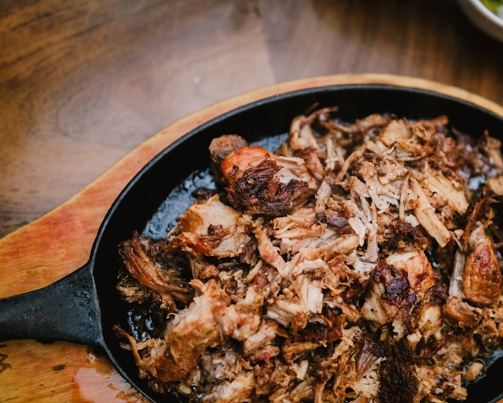

Cookbook
Puerto Rican Pernil

Puerto Rican style pork roast
It might just be the most flavorful pork you'll ever eat, and easy to make!
Ingredients
- 8 lbs pork shoulder or pork butt, skin on or off (your preference)!
- 8-10 garlic cloves cut into slivers
- Over half a jar of Goya sofrito (or you can get creative and mix it with culantro sofrito)
- 2 packets of Goya Sazon with culantro y achiote
- 1/4th cup Goya Adobo seasoning
Steps
- Combine the adobo and sazon. Get your jar(s) of sofrito open. Stab the pork shoulder in various places on all sides and insert the garlic pieces. Use the adobo and sazon mix as a dry rub and coat the pork. Rub the sofrito all around the pork. Toss any extra sofrito into the container/roaster pan with it (put it in a roaster pan already if it fits in your fridge).
- Cover with plastic wrap or a lid and leave in the refrigerator overnight.
- Preheat the oven to 300° F. Remove plastic/lid from pork and place in a roaster pan if it wasn't in one already. Have sofrito and/or a little bit of water in the pan.
- Cook covered for about 3 hours. You can add 1/2 to 1 cup of water to the roaster if there is little-to-no water left.
- Flip the pork over and roast for another 2 hours or so. Watch for the skin to be crispy to your liking. Broil for 15 minutes at the end if preferred.
- Remove from oven, let sit for about 15 minutes. Place pork on a cutting board, discard fat (and skin if you'd like). Chop the meat or shred it.
- If you plan on saving and reheating, store the remaining juices from the cooking process in the refrigerator.